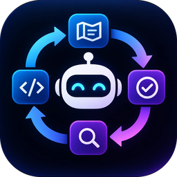
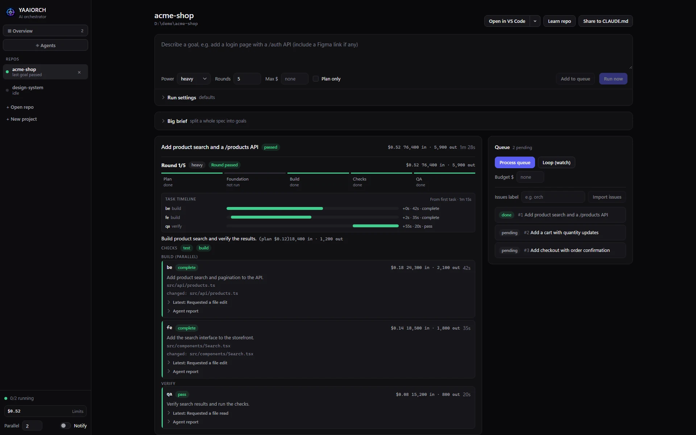

Parallel work, with clear ownership
An architect divides work into tasks with distinct file ownership. Foundation work runs first; independent implementation tasks can build in parallel.

YAAIORCHYAAIORCH gives AI agents a plan, your codebase, and a feedback loop. It keeps working until your project's checks pass and QA agrees.
Desktop app for Windows and Linux; macOS arrives in 0.6. The CLI runs wherever Node.js 20+ does. Needs Claude Code (installed and logged in) and git; the desktop app brings its own Node.js.
Not done yet? Failures go back into the plan. The next round tries again.

YAAIORCH coordinates Claude Code agents, runs checks in the orchestrator, and sends failures back for another round. A confident answer alone is never a pass.
An architect divides work into tasks with distinct file ownership. Foundation work runs first; independent implementation tasks can build in parallel.
A read-only architect plans; implementers build; then your configured checks and a read-only QA agent verify the result. A failed check means the round fails, regardless of agent claims.
Git checkpoints, a commit per round, rollback, budgets, timeouts and stuck detection help you review and recover work. Protected paths, a secret scan before every commit and an optional plan approval step keep unattended runs in bounds.
Run the CLI, manage projects in the browser, or use the desktop app, which brings its own Node.js. Queue goals, work across repos, and bring your own Claude Code agents and skills.
Hand it a spec or a big brief. The architect splits it into goals that build on each other, the queue works
through them with retries and one budget, and a coverage check adds what is still missing. Start from an
empty folder with orch new.
Label a GitHub issue and YAAIORCH picks it up: it works on its own branch, opens a pull request that closes the issue, comments on progress, and tries to fix the pull request's CI when a check fails. You review pull requests, not runs.
Install and log in to Claude Code, then use the latest release or follow the source setup guide. Run YAAIORCH in a clean git repo and set a budget that fits the task.
See the full quick start# Check that your environment is ready $ orch doctor # Describe the change; cap the spend $ orch run "Add a health endpoint with a test" \ --power economy --max-cost 2 # Or hand it a whole brief and let it work through the goals $ orch split --brief-file BRIEF.md \ --start --max-cost-total 20
Open source, designed for review, and judged on coding tasks with hidden tests that the agents never see.